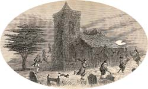

|
|
||||
|
|
Home | Corson Collection | Biography | Works | Image Collection | Recent Publications | Portraits | Correspondence | Forthcoming Events | Links | E-Texts | Contact Letters on Demonology and WitchcraftFirst Edition, First Impression: Letters on Demonology and Witchcraft, Addressed to J.G. Lockhart, Esq. By Sir Walter Scott, bart. London: John Murray, Albemarle Street. MDCCCXXX. Composition | Synopsis | Reception | Links Composition
Lockhart's suggestion was partly sparked by the interest raised by Robert Pitcairn's serial publication of Criminal Trials of Scotland, covering proceedings between 1487 and 1624, and featuring many cases of witchcraft. Pitcairn himself sent Scott transcripts of as yet unpublished trials, and many other students of the occult sent Scott source material on witchcraft while he was working on the Letters. In addition, he drew on earlier demonologies such as Reginald Scot's Discoverie of Witchcraft, Robert Kirk's Essay on the Subterranean Commonwealth, and Cotton Mather's Magnalia Christi. Scott's arguments against a supernatural explanation of such phenomena were influenced by John Ferriars's 'Of Popular Illusions and More Particularly of Modern Demonology' and Thomas Jackson's Treatise Containing the Originall of Un-beliefe. Composition was rapid, with the volume complete by mid-July 1830, but Scott's interest waned long before the last page. It was published on September 14, 1830, with ten illustrations by George Cruickshank. SynopsisThe book takes the form of ten letters addressed to Lockhart, the epistolary mode permitting Scott to be both conversational in tone and discursive in method. In these, Scott surveys opinions respecting demonology and witchcraft from the Old Testament period to his own day. As a child of the Enlightenment, he adopts a rigorously rational approach to his subject. Supernatural visions are attributed to 'excited passion', to credulity, or to physical illness. The medieval belief in demons is based on Christian ignorance of other religions, leading to the conviction that the gods of the Muslim or Pagan nations were fiends and their priests conjurers or wizards. In the post-Reformation period, the primitive state of science and predominance of mystical explanations of natural phenomena fed fear of witchcraft. In the late sixteenth and seventeenth centuries, witches were hunted with near-hysterical zeal. Examining Scottish criminal trials for witchcraft, Scott notes that the nature of evidence admissible gave free reign to accusers and left the accused no chance of escape. Prisoners were driven to confess through despair and the desire to avoid future persecution. Scott also observes that trials for witchcraft were increasingly connected with political crimes, just as in Catholic countries accusations of witchcraft and heresy went together. Advances in science and the spread of rational philosophy during the eighteenth century eventually undermined the belief in supernatural phenomena, although pockets of superstition remain. Scott's account is amply illustrated with anecdotes and traditional tales and may be read as an anthology of uncanny stories as much as a philosophical treatise.  ReceptionThe Letters on Demonology and Witchcraft were an immediate commercial success, with Scott's sceptical attitude towards the supernatural sharply dividing his readers. Critical reaction was somewhat mixed. The Gentleman's Magazine and Imperial Magazine warmly commended the work, and the Literary Gazette judged it a 'most interesting volume for all ages', particularly apt to correct 'idle phantasies in the young'. The Edinburgh Literary Journal concurred that it was an 'interesting book' but did not think that 'Sir Walter has gone very deep into the theory of supernatural visitations, or thrown much light upon the origin of the belief in them'. The Aberdeen Journal too questioned the depth of Scott's scholarship, arguing that commercial considerations weighed heavier with him than the spirit of philosophical inquiry. For the Monthly Review, conversely, the subject was devoid of all merit, a mere 'history of old women'. Subsequent scholars, however, have recognized the Letters as one of the earliest attempts to deal with magic and demonology in a scientific manner, pre-empting much late nineteenth-century research on folklore, ethnology, and popular religion. For further information on the Letters, see P.G. Maxwell-Stuart's introduction to the reprint published by Wordsworth in association with the Folklore Society in 2001, details of which may be found on the Recent Publications page. Links
Last updated: 19-Dec-2011 |
|||